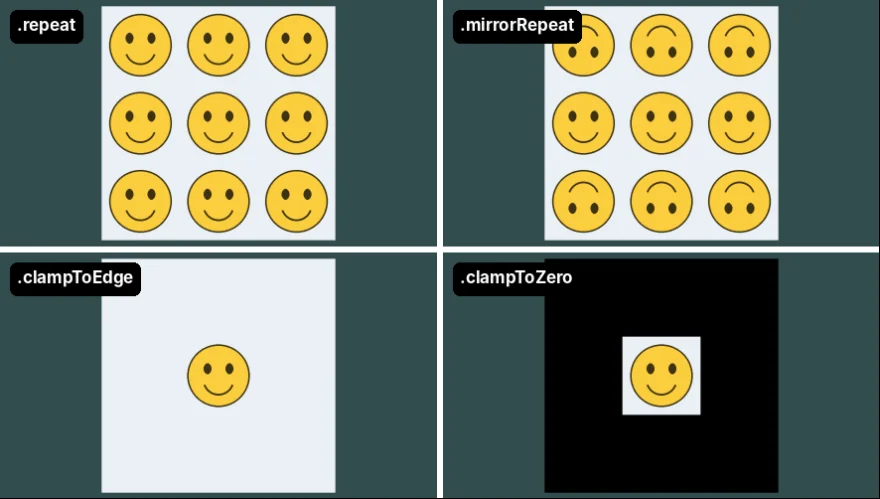

Per iniziare
Texture#
examples/Sources/04-Textures, si esegue con swift run Textures. Scarica tutti gli esempi oppure guarda come eseguirli.Dare un colore a ogni vertice non basta per ottenere un muro di mattoni o una cassa di legno.
Per avere dettaglio avvolgiamo delle immagini intorno alla geometria.
Un'immagine usata così è una texture, e leggerne un colore si dice fare sampling.
Coordinate di texture#
Ogni vertice riceve una coordinata di texture a due dimensioni (spesso chiamata UV) che dice quale punto dell'immagine gli appartiene.
Le coordinate vanno da 0 a 1 su entrambi gli assi e vengono interpolate lungo il triangolo come ogni altra uscita del vertice.
In Metal l'origine è in alto a sinistra
In Metal la coordinata di texture (0, 0) è l'angolo in alto a sinistra dell'immagine e v cresce verso il basso.
OpenGL mette (0, 0) in basso a sinistra.
Le coordinate copiate dai tutorial di OpenGL, o esportate da strumenti che seguono la convenzione di OpenGL, mostrano le immagini capovolte, a meno di ribaltare v (v = 1 - v) o di ribaltare l'immagine al caricamento.
Un rettangolo con posizioni e coordinate di texture:
let vertices: [Float] = [
// position // uv
0.5, 0.5, 0.0, 1.0, 0.0, // top right
0.5, -0.5, 0.0, 1.0, 1.0, // bottom right
-0.5, -0.5, 0.0, 0.0, 1.0, // bottom left
-0.5, 0.5, 0.0, 0.0, 0.0, // top left
]
const float vertices[] = {
// position // uv
0.5f, 0.5f, 0.0f, 1.0f, 0.0f, // top right
0.5f, -0.5f, 0.0f, 1.0f, 1.0f, // bottom right
-0.5f, -0.5f, 0.0f, 0.0f, 1.0f, // bottom left
-0.5f, 0.5f, 0.0f, 0.0f, 0.0f, // top left
};
let floatSize = MemoryLayout<Float>.stride
vertexDescriptor.attributes[0].format = .float3
vertexDescriptor.attributes[0].offset = 0
vertexDescriptor.attributes[0].bufferIndex = 0
vertexDescriptor.attributes[1].format = .float2
vertexDescriptor.attributes[1].offset = floatSize * 3
vertexDescriptor.attributes[1].bufferIndex = 0
vertexDescriptor.layouts[0].stride = floatSize * 5
const size_t floatSize = sizeof(float);
vertexDescriptor->attributes()->object(0)->setFormat(MTL::VertexFormatFloat3);
vertexDescriptor->attributes()->object(0)->setOffset(0);
vertexDescriptor->attributes()->object(0)->setBufferIndex(0);
vertexDescriptor->attributes()->object(1)->setFormat(MTL::VertexFormatFloat2);
vertexDescriptor->attributes()->object(1)->setOffset(floatSize * 3);
vertexDescriptor->attributes()->object(1)->setBufferIndex(0);
vertexDescriptor->layouts()->object(0)->setStride(floatSize * 5);
Caricare un'immagine#
MTKTextureLoader di MetalKit decodifica PNG, JPEG, HEIC, TIFF e altri formati comuni e carica il risultato in una nuova MTLTexture.
Trascina nel progetto un'immagine, per esempio container.jpg, e poi:
let texture: MTLTexture
// in init
let loader = MTKTextureLoader(device: device)
let url = Bundle.main.url(forResource: "container", withExtension: "jpg")!
let options: [MTKTextureLoader.Option: Any] = [
.generateMipmaps: true,
.SRGB: false,
]
texture = try! loader.newTexture(URL: url, options: options)
// metal-cpp has no MTKTextureLoader. Decode the image with stb_image and upload the pixels.
#define STB_IMAGE_IMPLEMENTATION
#include "stb_image.h"
MTL::Texture* loadTexture(MTL::Device* device, MTL::CommandQueue* queue, const char* path) {
int width, height, channels;
unsigned char* pixels = stbi_load(path, &width, &height, &channels, 4); // force RGBA
if (!pixels) { std::cerr << "Could not load " << path << "\n"; std::exit(1); }
MTL::TextureDescriptor* descriptor = MTL::TextureDescriptor::texture2DDescriptor(
MTL::PixelFormatRGBA8Unorm, width, height, true); // true: allocate mipmaps
descriptor->setUsage(MTL::TextureUsageShaderRead | MTL::TextureUsageRenderTarget);
MTL::Texture* texture = device->newTexture(descriptor);
texture->replaceRegion(MTL::Region::Make2D(0, 0, width, height), 0, pixels, width * 4);
stbi_image_free(pixels);
// Fill the mipmap chain on the GPU.
MTL::CommandBuffer* commandBuffer = queue->commandBuffer();
MTL::BlitCommandEncoder* blit = commandBuffer->blitCommandEncoder();
blit->generateMipmaps(texture);
blit->endEncoding();
commandBuffer->commit();
return texture;
}
texture = loadTexture(device, commandQueue, "container.jpg");
.SRGB: false dice al loader di trattare i valori dei pixel come semplici numeri.
Torneremo su questa scelta in Correzione gamma.
Se mai ti servisse l'orientamento di OpenGL, aggiungi .origin: MTKTextureLoader.Origin.bottomLeft, che ribalta l'immagine in verticale durante il caricamento.
Le immagini di un asset catalog si caricano per nome con loader.newTexture(name:scaleFactor:bundle:options:).
Caricare le immagini in C++
MTKTextureLoader appartiene a MetalKit, che metal-cpp non copre.
La versione C++ decodifica il file con la libreria a singolo header stb_image e carica i pixel con replaceRegion. stb_image restituisce per prima la riga in alto, il che coincide con l'origine in alto a sinistra di Metal.
Per avere l'orientamento di OpenGL chiama stbi_set_flip_vertically_on_load(true) prima di caricare.
Sampler#
Una texture è soltanto pixel.
Come vengono letti lo decide un oggetto separato, il sampler state:
let samplerState: MTLSamplerState
// in init
let samplerDescriptor = MTLSamplerDescriptor()
samplerDescriptor.minFilter = .linear
samplerDescriptor.magFilter = .linear
samplerDescriptor.mipFilter = .linear
samplerDescriptor.sAddressMode = .repeat
samplerDescriptor.tAddressMode = .repeat
samplerState = device.makeSamplerState(descriptor: samplerDescriptor)!
MTL::SamplerState* samplerState; // member of Renderer
// in the constructor
MTL::SamplerDescriptor* samplerDescriptor = MTL::SamplerDescriptor::alloc()->init();
samplerDescriptor->setMinFilter(MTL::SamplerMinMagFilterLinear);
samplerDescriptor->setMagFilter(MTL::SamplerMinMagFilterLinear);
samplerDescriptor->setMipFilter(MTL::SamplerMipFilterLinear);
samplerDescriptor->setSAddressMode(MTL::SamplerAddressModeRepeat);
samplerDescriptor->setTAddressMode(MTL::SamplerAddressModeRepeat);
samplerState = device->newSamplerState(samplerDescriptor);
samplerDescriptor->release();
Gli address mode decidono che cosa succede fuori dall'intervallo da 0 a 1:
| Modo | Effetto |
|---|---|
.clampToEdge |
I pixel del bordo si allungano verso l'esterno. È il valore predefinito. |
.repeat |
L'immagine si ripete. |
.mirrorRepeat |
L'immagine si ripete, ogni volta specchiata. |
.clampToBorderColor |
Fuori c'è un colore di bordo fisso (macOS e dispositivi iOS più recenti). |
.clampToZero |
Fuori c'è nero trasparente. |
Il filtering decide che cosa succede quando un pixel della texture (un texel) non corrisponde uno a uno a un pixel dello schermo.
.nearest prende il texel più vicino e, ingrandito, appare a blocchi.
.linear mescola i quattro texel più vicini e appare morbido.
Le mipmap sono una catena di copie già rimpicciolite della texture, ognuna grande la metà della precedente.
Quando una superficie è lontana, leggere una copia piccola evita lo sfarfallio ed è più veloce.
mipFilter = .linear mescola i due livelli più vicini, cosa che insieme al filtro lineare in riduzione prende il nome di filtro trilineare.
Impostare samplerDescriptor.maxAnisotropy = 8 rende ancora più nitide le superfici viste molto di taglio.
Se vieni da OpenGL
Le impostazioni di wrap e di filtro non sono proprietà della texture.
Una texture può essere letta attraverso più sampler, e un sampler può servire per tutte le texture.

Il sampling nello shader#
struct VertexIn {
float3 position [[attribute(0)]];
float2 uv [[attribute(1)]];
};
struct VertexOut {
float4 position [[position]];
float2 uv;
};
vertex VertexOut vertex_main(VertexIn in [[stage_in]]) {
VertexOut out;
out.position = float4(in.position, 1.0);
out.uv = in.uv;
return out;
}
fragment float4 fragment_main(VertexOut in [[stage_in]],
texture2d<float> colorTexture [[texture(0)]],
sampler textureSampler [[sampler(0)]]) {
return colorTexture.sample(textureSampler, in.uv);
}
Texture e sampler hanno ciascuno la propria tabella di indici, che si sceglie con [[texture(n)]] e [[sampler(n)]].
Collegali prima di disegnare:
encoder.setFragmentTexture(texture, index: 0)
encoder.setFragmentSamplerState(samplerState, index: 0)
encoder->setFragmentTexture(texture, 0);
encoder->setFragmentSamplerState(samplerState, 0);
Eseguilo e il rettangolo mostra la tua immagine.
Due texture insieme#
Una fragment function può leggere molte texture.
Carica una seconda immagine, collegala all'indice 1 e mescola:
fragment float4 fragment_main(VertexOut in [[stage_in]],
texture2d<float> texture0 [[texture(0)]],
texture2d<float> texture1 [[texture(1)]],
sampler textureSampler [[sampler(0)]]) {
float4 a = texture0.sample(textureSampler, in.uv);
float4 b = texture1.sample(textureSampler, in.uv);
return mix(a, b, 0.2);
}
mix(a, b, t) restituisce a * (1 - t) + b * t, quindi il risultato è per l'80% la prima texture e per il 20% la seconda.
Esercizi#
- Moltiplica le uv per 2 nella fragment function e prova ogni address mode.
Mostra la soluzione
Leggi la texture con
in.uv * 2.0.
Con.repeatvedi quattro copie, con.mirrorRepeatle copie sono specchiate e le giunture combaciano, e con.clampToEdgel'immagine riempie un quarto e i pixel del suo bordo si allungano sul resto.
Puoi provare tutti e tre nella demo interattiva qui sopra alzando la scala delle UV. - Passa i filtri a
.neareste mostra solo il centro della texture (uv da 0.45 a 0.55) per vedere i singoli texel.Mostra la soluzione
Imposta
minFilteremagFiltera.neareste rimappa le coordinate in modo che il rettangolo mostri un decimo dell'immagine.
Ogni texel diventa un quadrato visibile.
Torna a.lineare i quadrati si fondono in una sfocatura.float2 uv = 0.45 + in.uv * 0.1; return colorTexture.sample(textureSampler, uv); - Aggiungi un uniform che controlla il fattore di
mixe animalo.Mostra la soluzione
Aggiungi un float a una struct di uniform per lo stadio di fragment, collegalo con
setFragmentBytese impostalo asin(time) * 0.5 + 0.5a ogni frame.fragment float4 fragment_main(VertexOut in [[stage_in]], constant float &mixFactor [[buffer(0)]], texture2d<float> texture0 [[texture(0)]], texture2d<float> texture1 [[texture(1)]], sampler textureSampler [[sampler(0)]]) { return mix(texture0.sample(textureSampler, in.uv), texture1.sample(textureSampler, in.uv), mixFactor); }